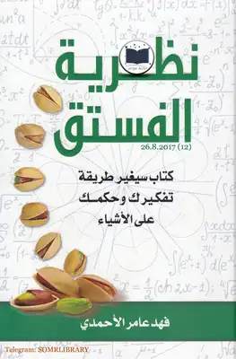

نظرية الفستق

نبذة عن كتاب نظرية الفستق
كتاب نظرية الفستق هو أحد كتب التنمية البشرية وتطوير الذات، مؤلف الكتاب هو فهد عامر الأحمدي، يتكون الكتاب من جزئيين الجزء الأول يحتوي على 338 صفحة، والذي يتضمن عدد كبير من المقالات التي تتحدث كيفية تطوير الذات وتحسين طرق التفكير وزيادة الوعي لدى الأشخاص.
والجزء الثاني يتكون من 332 صفحة، يتضمن 52 موضوعا في تطوير الذات وأخطاء التفكير وعلاقتنا مع الناس.
ملخص كتاب نظرية الفستق الجزء الأول
جميع الكاتب مواضيعه التي تتمحور حول تطوير النفس وتنميتها في هذا الجزء، حيث قام بجمع مقالاته التي تتعلق في جانب التغيير والتطوير والتنمية الذاتية وأهمية التفكير المستقل، كما أنه قام بعمل أفكار مبتكرة لحل المشاكل التي توجهنا في الحياة وذلك لشحن الطاقة الإيجابية لدى القارئ.
ومن المواضيع التي تضمنها الكتاب:
ما هي خطتك في الحياة.
اعرف نفسك أولاً.
إن لم تحلم بهِ فكيف ستُحقّقه.
لا تفكّر بالنجاح بل بخلق عادة ناجحة.
ملخص كتاب نظرية الفستق.
عشرون قاعدة في المنزل.
إرشادات الحياة الصغيرة.